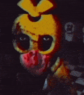

|  | Five Nights at Freddy's 2 é o segundo jogo da série, se passando antes de Five Nights at Freddy's na linha do tempo do jogo. É um jogo indie point-and-click de survival horror, no qual o jogador deve sobreviver às noites na "nova e improvisada" Pizzaria Freddy Fazbear evitando os animatrônicos. |  |